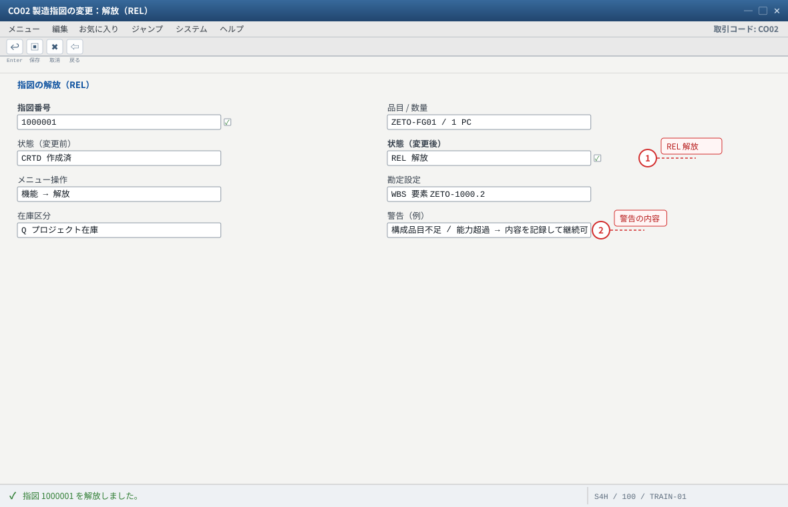
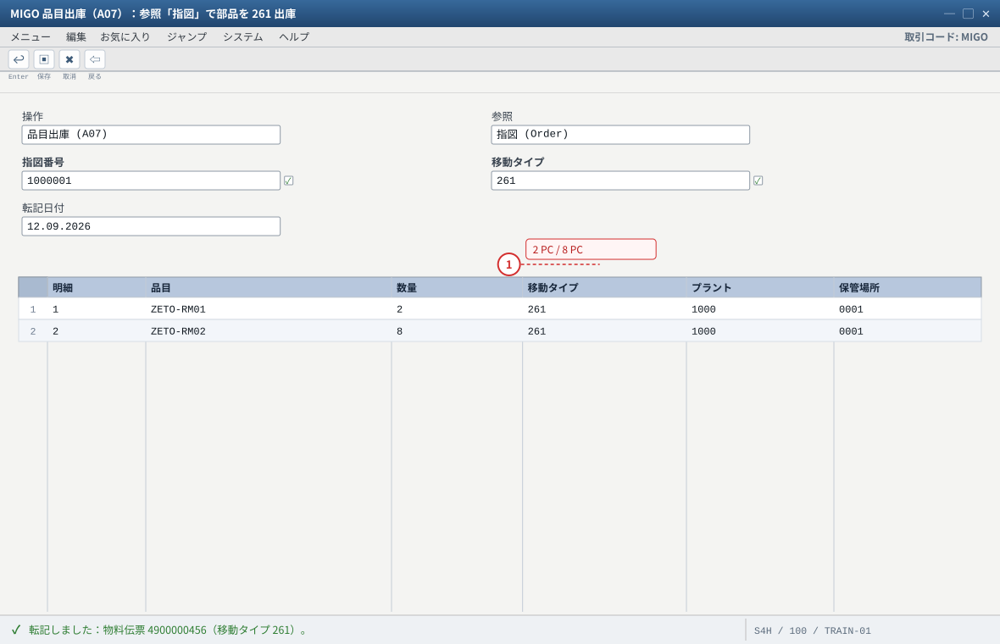
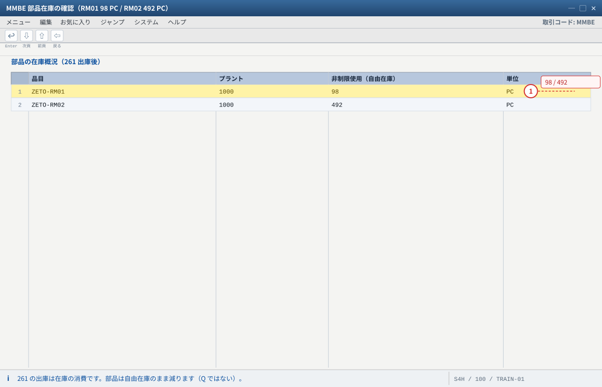
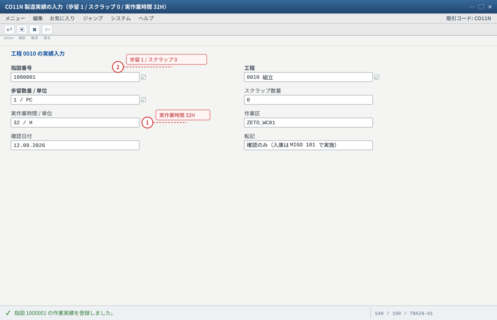
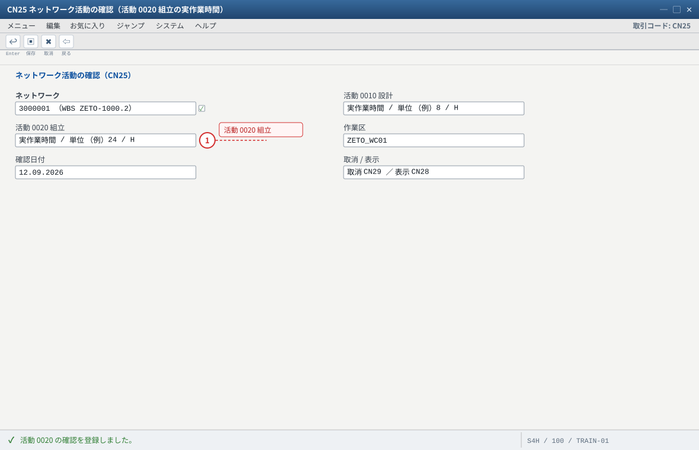
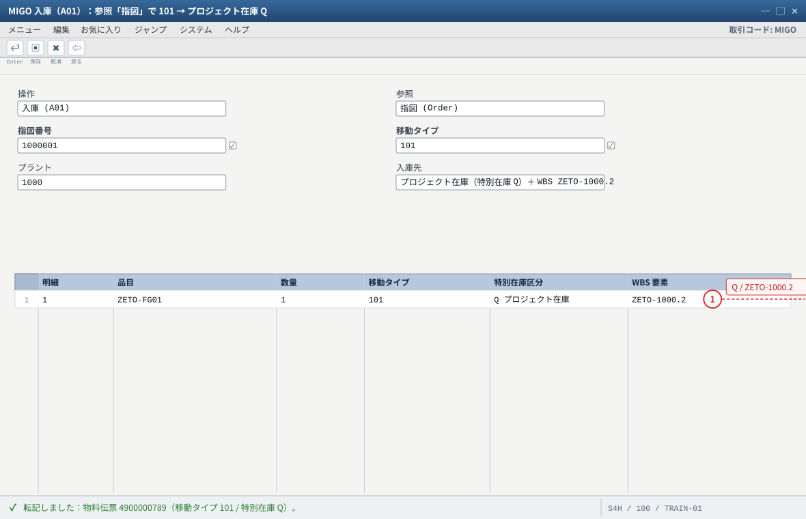
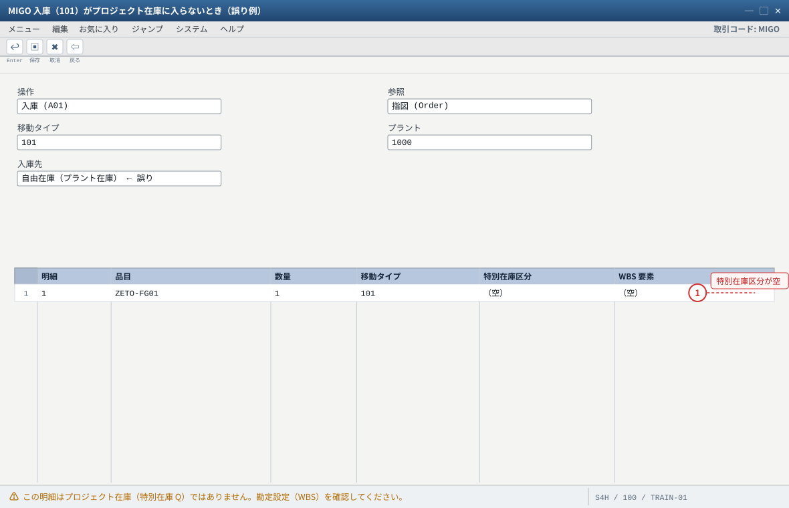
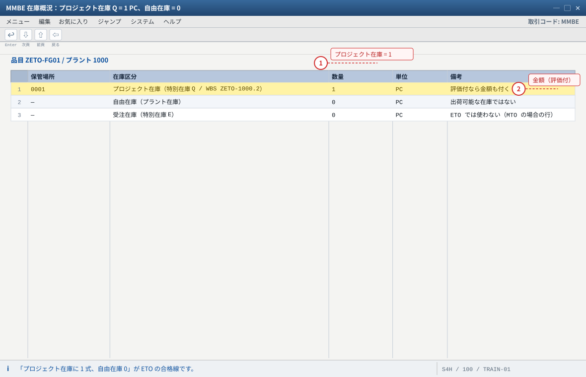
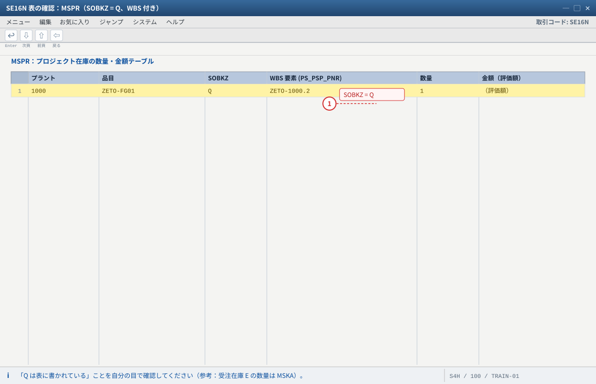
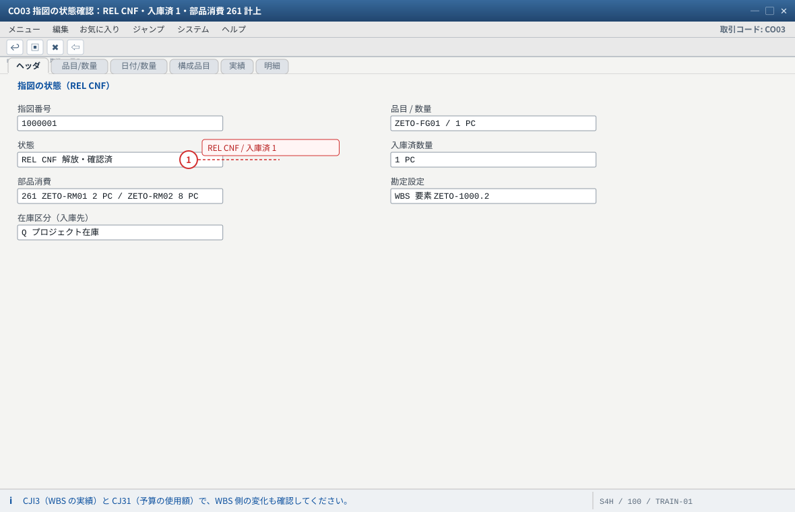

练习③ 実行と入庫（プロジェクト在庫 Q を作る）
.png 放进 assets/gui/ 后执行 python3 tools/swap_gui_images.py <site> --apply 即可一键替换。MMBE のプロジェクト在庫 = 1 式、自由在庫 0、WBS .2 に材料費・労務費が集まっている。预计 75 分钟。REL
部品 2/8
実績・活動確認
→ プロジェクト在庫 Q
Q = 1 式
WBS に原価
3-0 指図の解放（CO02）
CO02→ 指図番号（练习② で記録）→ Enter。- メニュー「機能」→「解放」→ 状態 REL になる。
- 警告（構成品目不足、能力超過など）が出たら内容を読み、練習環境では継続して可（なぜ出たかは記録）。
CN25（個別）/CN27（一括）で行い、取消は CN29。製造指図（CO11N）とネットワーク活動確認のどちらで工数を拾うかは案件設計で決めます（両方やると工数の二重計上）。
- 1 解放しないと 261 出庫・CO11N 実績・101 入庫ができない（練習③ の入口）
- 2 警告が出たら「なぜ出たか」を記録する。練習環境では継続して可
ネットワークを使う場合の活動確認は CN25（個別）/ CN27（一括）、取消は CN29 です。製造指図（CO11N）とネットワーク活動（CN25）で同じ工数を二重計上しないよう案件ルールを決めてください。
3-1 部品出庫（MIGO / 261）
输入值
| 项目 | 值 |
|---|---|
| 操作 / 参照 | 品目出庫（A07）/ 参照：指図（Order） |
| 移動タイプ | 261 |
| 明細 | ZETO-RM01 2 PC、ZETO-RM02 8 PC（プラント/保管場所は予約どおり） |
| 転記日付 | 今日 |
MIGO→ 「品目出庫 (A07)」＋参照「指図 (Order)」→ 指図番号 → Enter（予約から部品と数量が帯出される）。- 明細の品目・数量・移動タイプ
261を確認 → 「転記」→ 物料伝票番号を記録。 - 確認：
MMBEで RM01 100 → 98、RM02 500 → 492。 - WBS への原価計上を確認：
CJI3（実績）→ プロジェクトZETO-1000→ WBS.2に材料費（消費）が出ていること。
※ 261 の勘定設定は指図（＝WBS.2）。「指図に集まっている」→ 決済（练习⑤）で WBS に確定します。
CO11N の保存時に部品が自動で出庫されます。
261 を手で打った後にバックフラッシュも効くと二重出庫になります。どちらで運用するかを先に決めるのが鉄則。
- 1 数量は指図の予約（構成品目）どおり。手で数量を変えると在庫差異の原因になる
自動出庫（バックフラッシュ）を ON にしている品目では、CO11N の保存時に自動で出庫されます。261 を手で打った後にバックフラッシュも効くと二重出庫になるため、どちらで運用するかを先に決めてください。

- 1 100 → 98、500 → 492 が期待値。合わないときは二重出庫か初期在庫を疑う
取消は MBST（または MIGO の取消）。WBS への原価計上は CJI3 で確認します（261 は「指図に集計」→ 決済で WBS へ）。
3-2 製造実績（CO11N）と活動確認（CN25）
CO11N（製造実績） 指図 : （练习② の指図） 工程 : 0010（組立） 歩留数量 : 1 PC ／スクラップ : 0 PC 実作業時間: 例 32 H（標準 4H × 1 式 + 調整を実績として計上。練習用の単純化） CN25（ネットワーク活動の確認／ネットワークを使っている場合） 活動 : 0010 設計・0020 組立（それぞれ実作業時間を計上） 取消 : CN29（個別）/ 表示は CN28
CO11N→ 指図番号 → 工程0010→ 歩留1・スクラップ0・実作業時間（例 32H）→ 保存。- 指図状態に CNF（確認済） が追加されることを
CO03で確認。 - ネットワークを使っている場合は
CN25で活動（0010 設計・0020 組立）の実績を計上し、CN28で確認。
進捗（CNE1/CNE2）は练习⑤ で扱います（結果分析の材料）。
CJI3 をこの時点で見て、
「指図に集まっている原価」と「WBS に確定した原価」の違いを体感してください（练习⑤ の決済で WBS 側に移る）。
- 1 実作業時間が労務費として指図に集計される（決済で WBS へ）
- 2 保存後に指図の状態へ CNF（確認済）が追加される。CO03 で確認する
歩留＋スクラップが指図数量を超えると「確認数量が指図数量を超過」で止まります。入庫は MIGO 101（自動入庫設定なら同時に転記されます）。

- 1 ネットワークを使う場合はここで工数を拾う。製造指図（CO11N）と二重計上しないこと
進捗（CNE1 / CNE2）は練習⑤ で扱います（結果分析・WIP の材料）。どちらで工数を拾うかは案件設計で決めてください。
3-3 完成品入庫（MIGO 101 → プロジェクト在庫 Q）
操作 / 参照 : 入庫 (A01) / 参照：指図（Order） 移動タイプ : 101 数量 : 1 PC 入庫先 : プロジェクト在庫（特別在庫 Q）＋ WBS ZETO-1000.2 ← 自動表示されるはず プラント : 1000
MIGO→ 「入庫 (A01)」＋参照「指図 (Order)」→ 指図番号 → Enter。- 確認すべきは 3 点：移動タイプ 101・特別在庫 Q（WBS
ZETO-1000.2）・数量 1。
ここが「自由在庫」や「空」になっていたら、入庫はプロジェクト在庫に入りません（故障 #4）。 - 「転記」→ 物料伝票番号を記録。

- 1 確認すべきは 3 点：移動タイプ 101・特別在庫 Q（WBS 付き）・数量 1
評価付プロジェクト在庫なら金額も同時に計上されます。入庫先が自動表示されない場合は、指図の勘定設定（CO03）と評価付フラグ（CJ20N）を確認してください。

- 1 ① 指図の勘定設定（CO03）② 評価付在庫フラグ（CJ20N）③ MRP4 の個別所要量 ④ 戦略グループ（OVZG）を順に点検
対処は MBST（または MIGO の取消）で取り消し → 設定を修正 → 再入庫。原因の切り分けは 練習⑤ の故障対照表と C9 の 4 点セットが近道です。
3-4 在庫と金額の確認（MMBE / MB52 / MSPR）
MMBE→ 品目ZETO-FG01/ プラント1000→ プロジェクト在庫（特別在庫 Q）: 1 PC（WBSZETO-1000.2付き）を確認。自由在庫（プラント在庫）は 0 のままであることも確認。MB52→ 品目ZETO-FG01→ 「プロジェクト在庫」欄に 1 PC。SE16N→MSPR（プロジェクト在庫の数量・金額テーブル）→SOBKZがQ、WBS がZETO-1000.2のレコードを確認する。
参考：受注在庫（E）の数量はMSKA。ETO はMSPR。- 評価付プロジェクト在庫なら、
MMBEの金額欄（またはMB5B在庫推移）で金額が付いていることも確認（付いていなければ C9・C2）。
MSKA（受注番号付き）、ETO は MSPR（WBS 付き）。表で確認する癖をつけてください。
- 1 MTO は MSKA（受注在庫 E）、ETO は MSPR（プロジェクト在庫 Q）。ここが読み分けの核心
- 2 金額欄が空なら評価付プロジェクト在庫 OFF か評価クラス未設定（C9 / C2）
MB52 でも「プロジェクト在庫」欄に数量が出ます。金額は MMBE の金額欄または MB5B（在庫推移）で確認してください。

- 1 SOBKZ = Q と WBS の組み合わせが、プロジェクト在庫であることの物理的な証拠
自システムでの確認：数量・金額の項目名は表の項目（F1）で確認してください。移動の証跡は MATDOC（/ MSEG）で移動タイプ 261・101 を追えます。
3-5 指図と WBS の状態確認
CO03→ 指図：状態 REL CNF、入庫済数量 1、部品消費（261）が計上されていること。CJI3（実績）→ プロジェクトZETO-1000→ WBS ごとに 原価（材料費・労務費など）を見る。CJ31（予算）→ 使用額（実績＋コミット）が増えていることを確認。MD04→ 品目ZETO-FG01：需要（得意先所要量）と補貨（指図）が並び、プロジェクト在庫 +1 / 利用可能 0 になっていること。

- 1 状態が REL CNF で入庫済 1 = 練習③ の完了状態
CJI3 では WBS .2 に材料費・労務費が出ているかを確認し、CJ31 の使用額（実績＋コミット）が動いたことを説明できるようにします。MD04 では需要と補貨が並び、プロジェクト在庫 +1 / 利用可能 0 になります。
期待结果汇总（本练习做完）
| # | 确认项目 | 期待值 | 确认方法 |
|---|---|---|---|
| 1 | 指図状態 | REL CNF、入庫済 1 | CO03 |
| 2 | 部品在庫 | RM01 100→98、RM02 500→492 | MMBE |
| 3 | プロジェクト在庫 Q | 1 PC（WBS .2 付き）・自由在庫 0 | MMBE/MB52/SE16N: MSPR |
| 4 | 在庫の評価 | 金額が付いている（評価付の場合） | MMBE 金額欄 / MB5B |
| 5 | 在庫伝票 | 261（部品）と 101（完成品・特別在庫 Q） | MATDOC（/ MSEG） |
| 6 | WBS の実績 | WBS .2 に材料費・労務費が計上 | CJI3 |
| 7 | 予算の使用額 | CJ31 の使用額が増加 | CJ31 |
つまずきと対処（本练习版）
| 症状 | 最可能的根因 | 确认 / 対処 |
|---|---|---|
| 261 で「予約がない/数量超過」 | 指図未解放・構成品目未展開・既出庫 | CO02 解放 → CO03 構成品目 → 残数量。取消は MBST |
| 101 入庫がプロジェクト在庫に入らない（自由在庫へ） | ① 指図の WBS 勘定設定が無い ② プロジェクト定義の評価付フラグ OFF ③ 品目 MRP4 が集合所要量 ④ 戦略グループが Q を指していない | ①CO03 の勘定設定 ②CJ20N ③MM03 MRP4 ④OVZG。MBST で取消 → 修正 → 再入庫 |
| MMBE にプロジェクト在庫の行が出ない | 同上（Q が成立していない） | C9 の 4 点セットを総点検 |
| 在庫に数量はあるが金額が無い | 評価付プロジェクト在庫 OFF、評価クラス未設定 | CJ20N のフラグと MM03 会計ビュー |
| CJI3 に実績が出ない | 勘定設定が WBS に乗っていない（指図/購買の勘定設定） | CO03 の勘定設定、SE16N: COEP で CO 明細を確認 |
| 部品がマイナス在庫 | 初期在庫不足・二重出庫 | MMBE で確認 → MBST 取消 → 在庫補給（561） |
| CO11N で「確認数量が指図数量を超過」 | 歩留＋スクラップ > 指図数量 | 数量を調整（1 / 0） |
验收（完成基准）
- 指図を解放（REL）し、261 で部品 2 / 8 を出庫した（在庫 98 / 492）。
CO11Nで歩留 1 を報告し、指図がCNFになった（ネットワーク利用時はCN25も実施）。MIGO101 で 1 式をプロジェクト在庫（Q）へ入庫し、自由在庫が 0 のままであることを確認した。MMBEとSE16N: MSPR（SOBKZ = Q）で表レベルでも確認した。- （評価付なら）
MMBEの金額欄で金額が付いていることを確認した。 CJI3で WBS.2に実績が出ており、CJ31の使用額が動いたことを説明できる。
VA02）し、1 式だけ入庫・納入して MD04 と MSPR の見え方を確認する。② バックフラッシュ：自動出庫を ON にした別品目で、261 を打たずに
CO11N だけで部品が出ることを確認。③ 外注：活動 0030（外部処理）を
ME51N → ME21N → MIGO で回し、費用が WBS に入ることを確認。